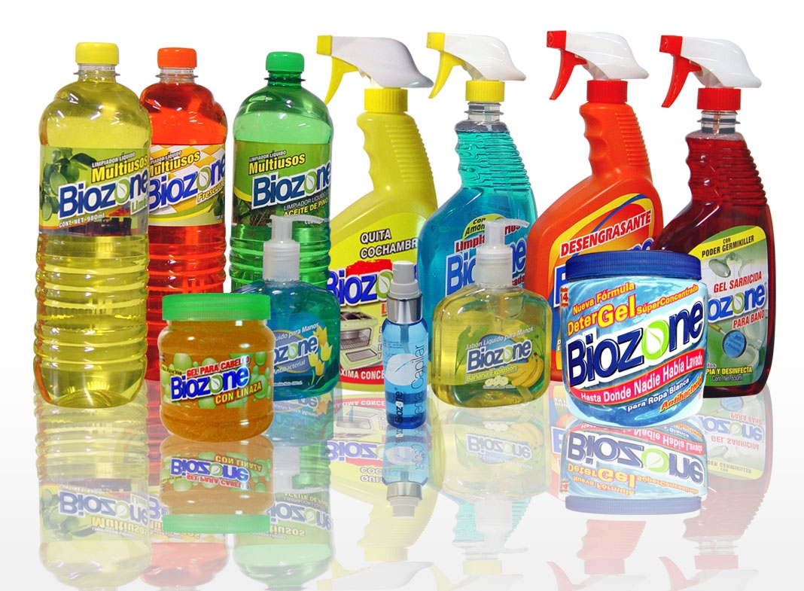
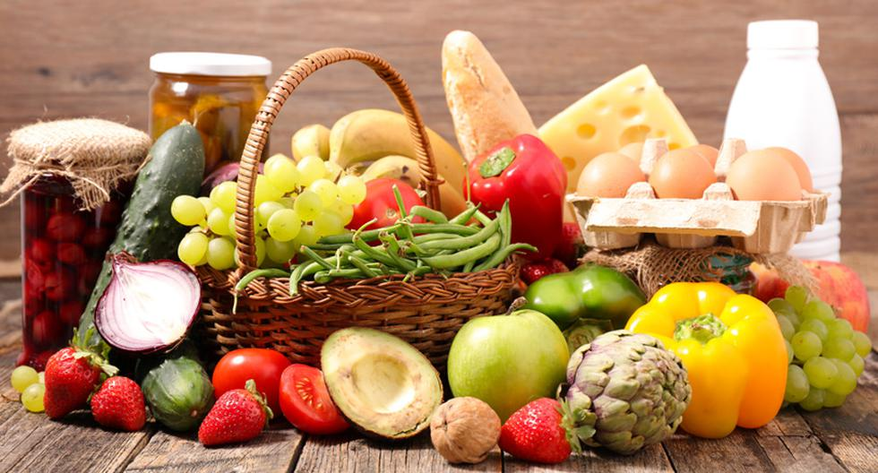

"La Sirena" es una cadena de supermercados en la República Dominicana. Fundada en 1969 por José Luis Corripio Estrada, inicialmente se dedicaba a la venta de electrodomésticos y artículos para el hogar. Sin embargo, con el tiempo, la empresa diversificó su oferta y comenzó a incluir productos alimenticios y de supermercado.
Productos
descripcion de producto:
Estos productos ayudaran con la limpieza de el hogar en todo momento,
tener precaucion ya que puden contener olores fuertes.

Precio de 150 a 200 DOC
descripcion de producto:
Vevidas refrescantes de variedad de sabores,
las vevidas pueden llegar hacer energeticas y algunas azucaradas.

Precio de 50 a 125 DOC
descripcion de producto:
Productos alimenticios prereservados, conservados y en pacados para el consumo de las masas los poductos, de ven de mantenerse a una temperatura a decuada para que el este se conserve.

Precio de 500 a 1000 DOC
o mas